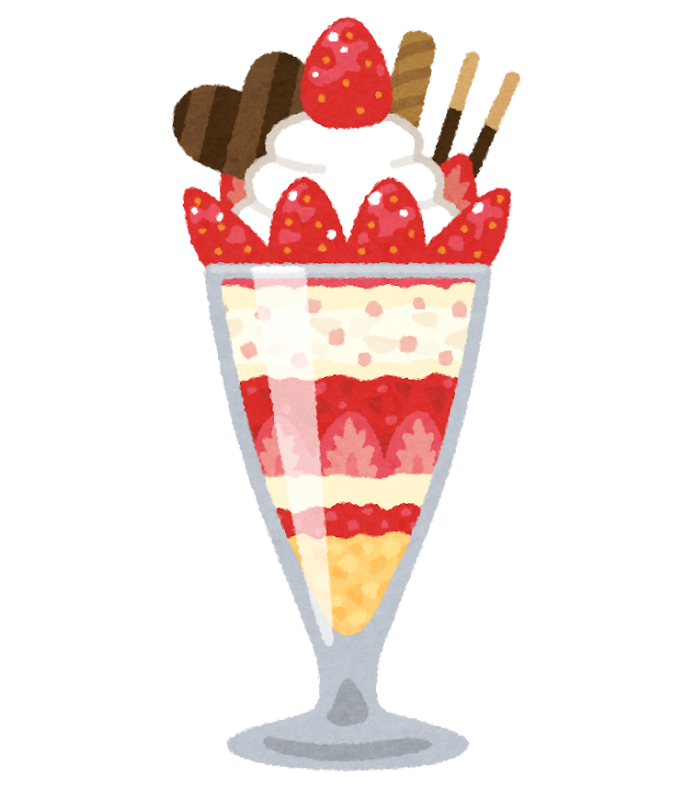
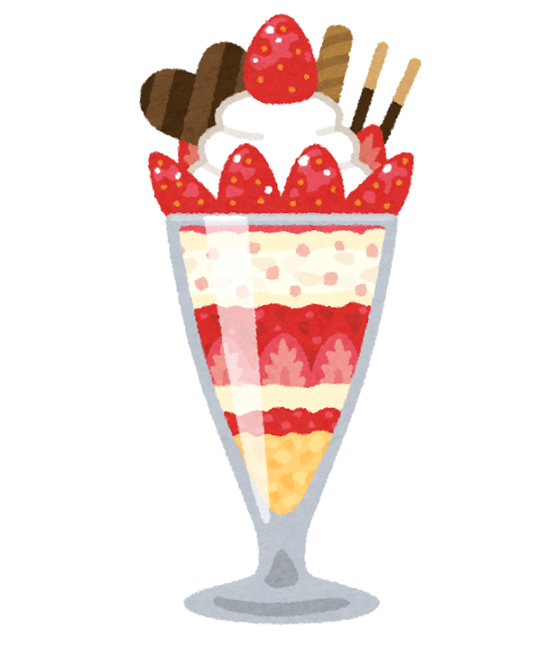

画像置換

WOVNの管理画面でsweets_dounuts_box.png への画像置換を設定してください。
英語ページへ切り替え後、正しく画像が差し替わるか確認してください。
リンク置換（PDF）
WOVNの管理画面でenglish.pdf へのリンク置換を設定してください。
英語ページでリンク先が english.pdf になっているか確認してください。

WOVNの管理画面でsweets_dounuts_box.png への画像置換を設定してください。
英語ページへ切り替え後、正しく画像が差し替わるか確認してください。
WOVNの管理画面でenglish.pdf へのリンク置換を設定してください。
英語ページでリンク先が english.pdf になっているか確認してください。